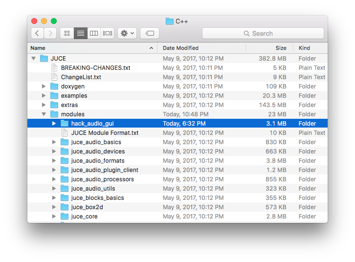
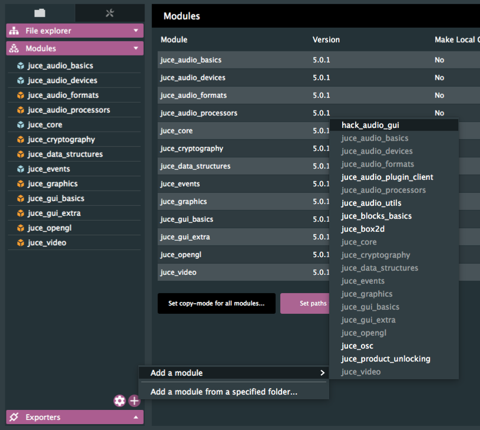

about
This
JUCE module provides a custom interface for HackAudio plugins.
installation
To install this module, simply clone the repository into the modules folder of your JUCE installation.

Once the module has been downloaded, you can import it with the Projucer!

requirements
This modules requires at least JUCE version 4.0.
features
This module customizes built-in JUCE components such as sliders, buttons, and labels, while also offering new components such as selectors, diagram displays, and meters!